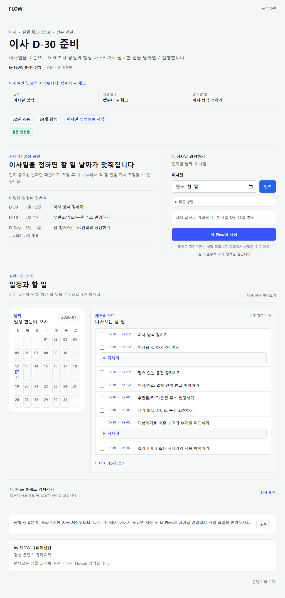
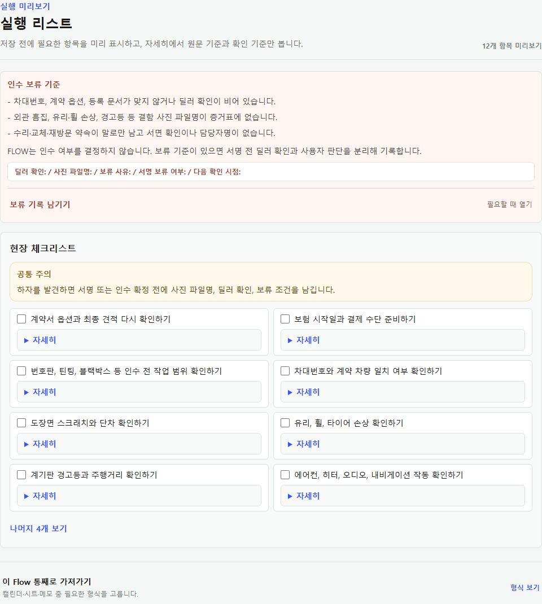
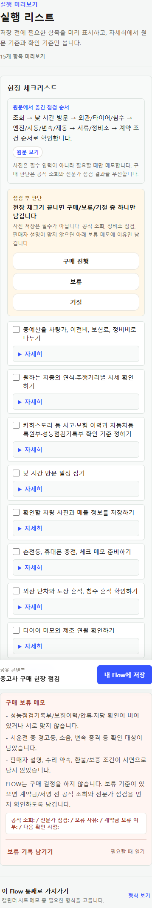
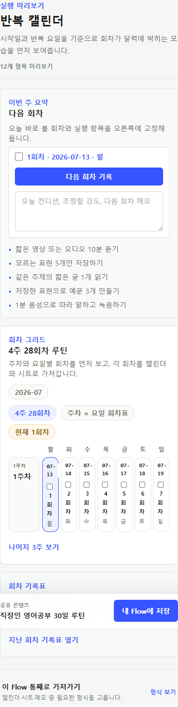
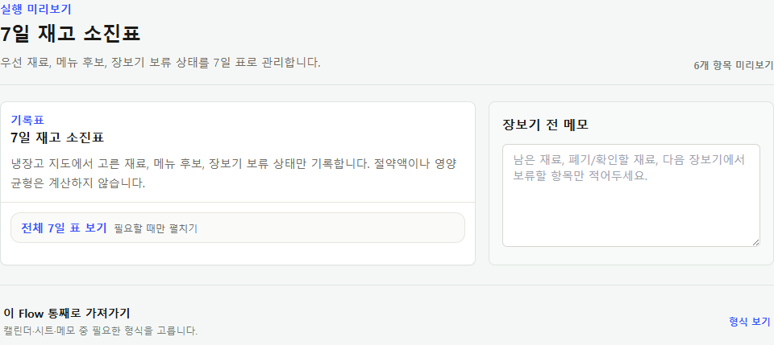

Timeline · 이사 D-30
wide는 일정 개요보다 실행 목록을 넓게, mobile은 주요 8개 할 일을 먼저 보여준다.


2026-07-12 · PUBLIC FLOW VISUAL SYSTEM
원본의 풍부한 맥락은 보존하고, 사용 순간에는 필요한 행동만 먼저 보여준다. 타임라인·점검·판단·루틴·기록형을 한 화면 복제품으로 만들지 않았다.
wide는 일정 개요보다 실행 목록을 넓게, mobile은 주요 8개 할 일을 먼저 보여준다.

보류 기준은 보이되 기록 폼은 접고, 핵심 체크를 먼저 보여준다.

점검 순서와 구매/보류/거절 판단을 먼저, 보류 메모는 필요할 때 연다.

현재 세션과 이번 주를 먼저 보여주고 미래 주차와 지난 기록은 펼친다.

오늘 기록 행과 장보기 메모를 먼저, 전체 표는 필요할 때 펼친다.

리뷰, 수정 요청, 기준 Flow 업데이트 수락, 제작자 집계 신호는 아직 화면과 데이터 계약이 없다. 공개 Flow 시각 시스템 완료를 전체 서비스 완료로 해석하지 않는다.